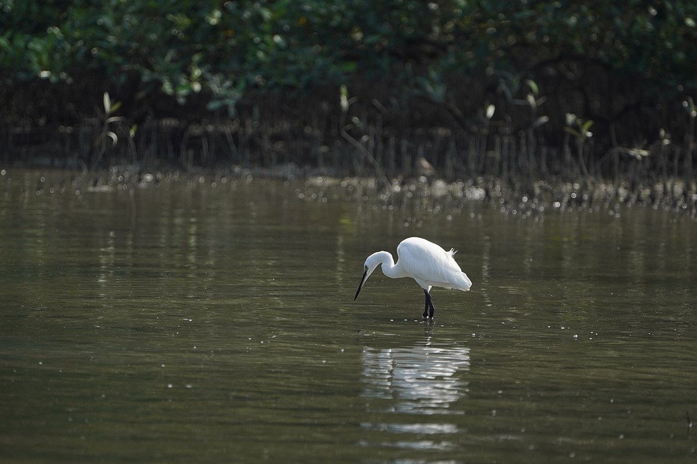

Kadalundi Bird Sanctuary: A Treat To Eyes
A remarkable sanctuary hosting more than 100s of native bird species and 60 migratory bird species is widely known for its location. The peculiarity of the place is that the river kadalundi puzha flows into the arabian sea . travellers who are keen to know about such places, Kadalundi bird sanctuary is the best place for them. This is one of the most beautiful places in Malappuram.
...
...